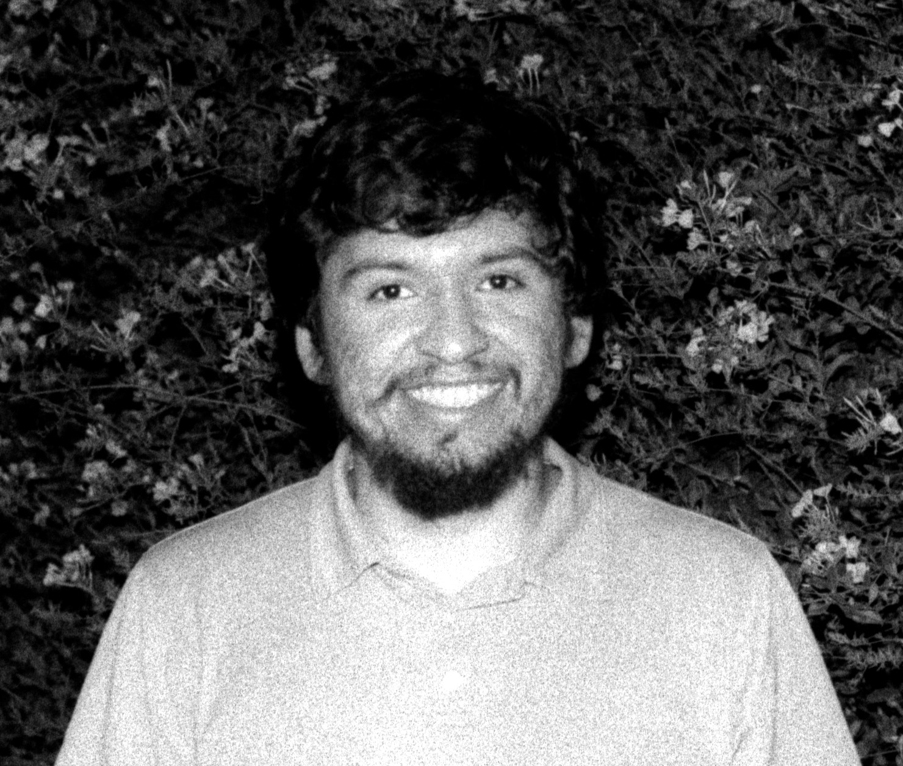

Jose Orozco

Objective:
I aim to develop as a well-rounded electrical engineer that understands the various facets that compose electrical engineering. My current goal is to have a stronger understanding of RF and digital design, practically and theoretically.
Education:
UC, San Diego: Sep '17 - Jun '21
B.S. in Electrical Engineering with an emphasis on Circuits and Systems.
Work related experience:
General Atomics: Aeronautical Systems, Inc.: Nov '21 - Present
EMI/EMC engineer
Triton UAS (formerly UCSD AUVSI): Apr '18 - Jun '19 (Member), Jun '19 - Jun '21
Embedded Co-lead
California Space Grant Consortium (Artemis Student Challenge): Jun '20 - Jun '21
Guidance, navigation, and control (GNC)/Simulation development
UCSD ATS: Oct '17 - Jan '18
IT Desk Help
Skills:
- Strong understanding of operating spectrum analyzers, and oscilloscopes
- Proficient in C/C++, SPICE, and network analyzer operation
- Basic understanding of Verilog/SystemVerilog, and Python
- Intermediate experience of MATLAB and Mathematica
- Linux power user; used various distros. Thus, familiar with different package managers: pacman, yum, portage, etc.
- Native Spanish speaker